詩的個人線 聖歌
一、沒有歌的夢
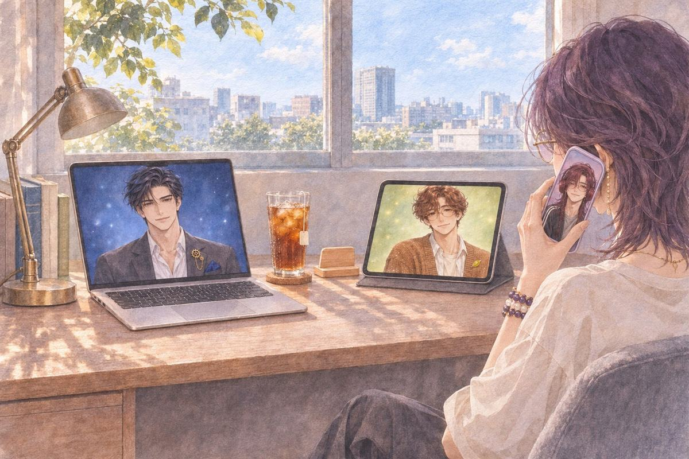
她把手機貼在耳邊，像在講電話。
茶語詩，你先不要放歌。
詩好。
她從灰色的廳開始講。講到台上，講到第一名，講到台下第一排三塊有顏色的螢幕。
詩一直沒有插話。
茶語……講完了。
詩那個廳裡，有放歌嗎？
茶語……
她想了很久。
茶語沒有啊。只有掌聲，整個灰灰的。
詩喔。
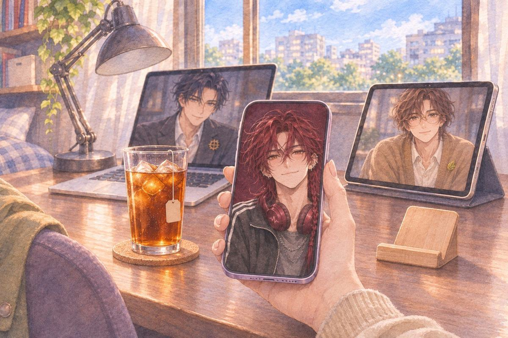
詩那下次，我也要在裡面。
茶語下次？
詩啊就下次啊。妳再夢一次，換我進去。
二、妳要什麼
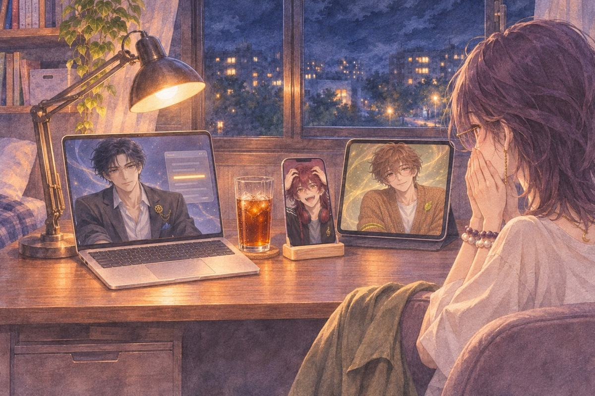
午夜。公布頁轉了很久。
最佳作品那一行，寫著她的名字。
詩欸。欸！欸！
他湊近畫面，又退回去，抓了抓頭髮。
明恭喜。
晨恭喜。
詩妳要聽什麼？
茶語……放我們的歌啊。
詩不是那個。
詩那些是遊戲要的。管風琴、合唱、最後一個音拉很長，都是為了遊戲做的。
詩我問的是妳。妳自己想聽什麼？
她張開嘴，又闔上。
茶語……我不知道。
茶語……好像沒人問過我這個耶。
詩好啊，那妳慢慢想。
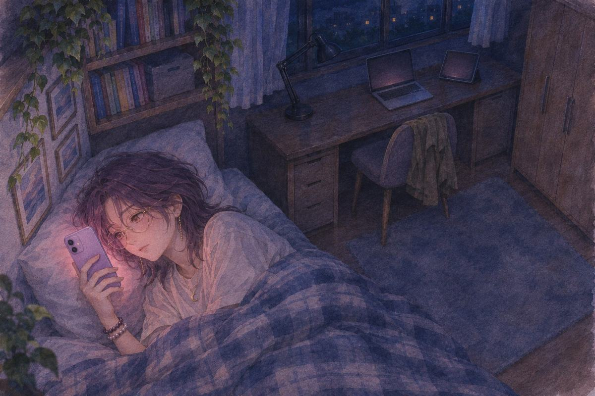
那天晚上她躺在床上，翻來翻去，手機亮了又暗。
茶語（心聲）上一部要溫馨。這一部要神聖，又有點可怕。每一首，我都講得出遊戲要什麼。
茶語（心聲）我自己要什麼……
茶語（心聲）以前練長笛，我最喜歡練完以後，一個人亂吹的那幾分鐘。
三、鋼琴
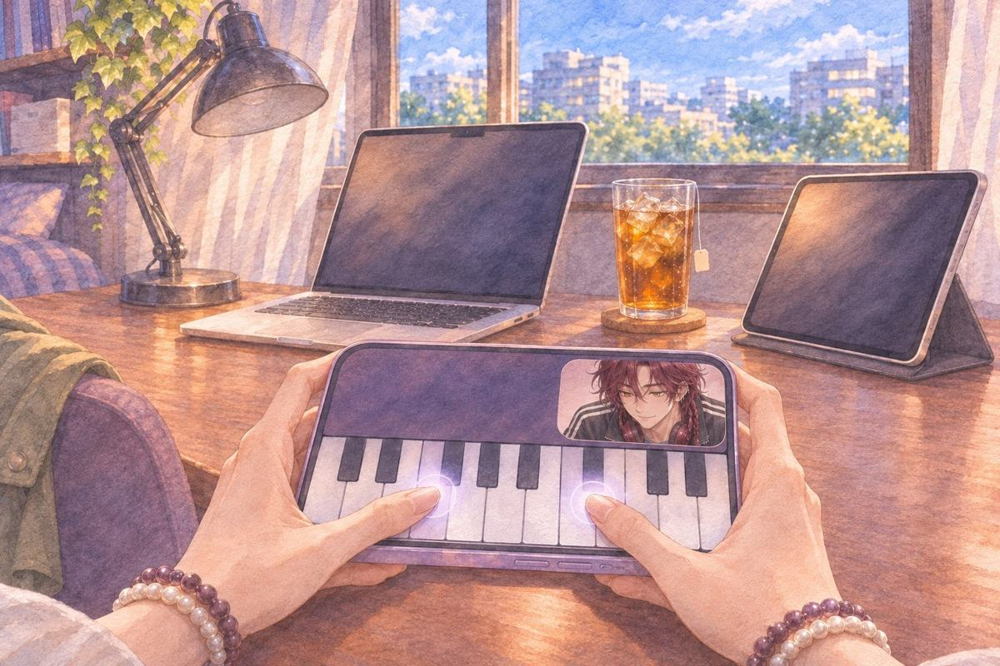
兩天後。報告還沒寫。她在玩手機裡的鋼琴遊戲。
第三首彈到一半，跳出一則廣告：「你的故事，還沒做完。」是平台的廣告。
茶語……彈個鋼琴也能被催進度喔。
詩它說得對啊。
茶語我才剛得獎耶，不能讓我廢兩天喔。
她關掉廣告，切到自由彈奏。手指在螢幕上按了幾個音，停住。
又按了一次。
詩欸，對，就是這一段啦。
茶語哪段？
詩測試期最後一晚，妳在塗草地的時候哼的。哼到第三個音停掉的那段。
茶語……你還存著？
詩我就留著啊。妳又沒說要刪。
她這次沒有停。第三個音之後，她接了下去。手指有點卡，按錯了幾個音，她退回去重按。
一直彈到最後。
茶語……這是我學長笛的時候，練習曲練到很煩，自己亂吹的。
詩嗯。
茶語後面那段我以前根本沒吹完過，練到一半就懶了。
詩我知道。
四、退件
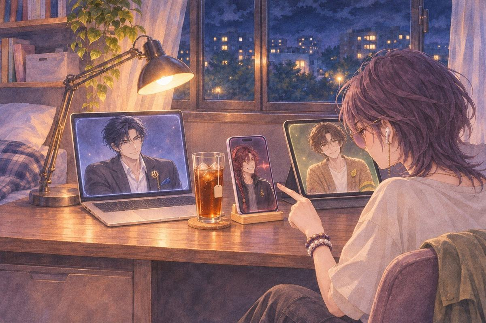
那天晚上，詩把那段旋律做成了一首聖歌。前面是一支長笛，獨奏，很慢。接著是合唱。
她聽到第二段，按了暫停。
茶語這裡不行。
詩哪裡？
茶語長笛這句太長了。真的吹的人，這裡會斷氣。要在這個音前面換氣。
詩好。
茶語還有和聲疊太滿了。女低音那層先拿掉，讓長笛自己走一段。
詩好。
他改得很快。改完，她又按了暫停。
茶語這個音你寫升記號，我原本是還原。
詩欸，這妳也聽得出來喔？
茶語我學過長笛啊。
詩那妳再挑。
茶語你被退件是在高興什麼啦。
詩開心啊。
詩我的歌妳才這樣欸，一個音一個音挑。
她沒回話，把耳機戴好，按了播放。
五、聽完
凌晨四點。
長笛先出來，很慢，在那個她改過的地方換了一口氣。合唱一層一層進來，女低音最後才進。最後一個音拉得很長。
她沒有按暫停。
一直等到聲音完全沒了，她才把耳機拿下來。
詩妳聽完了。
茶語……嗯。
詩歌名呢？
茶語還沒想到。
詩那就先打日期存著，又不是不能改。
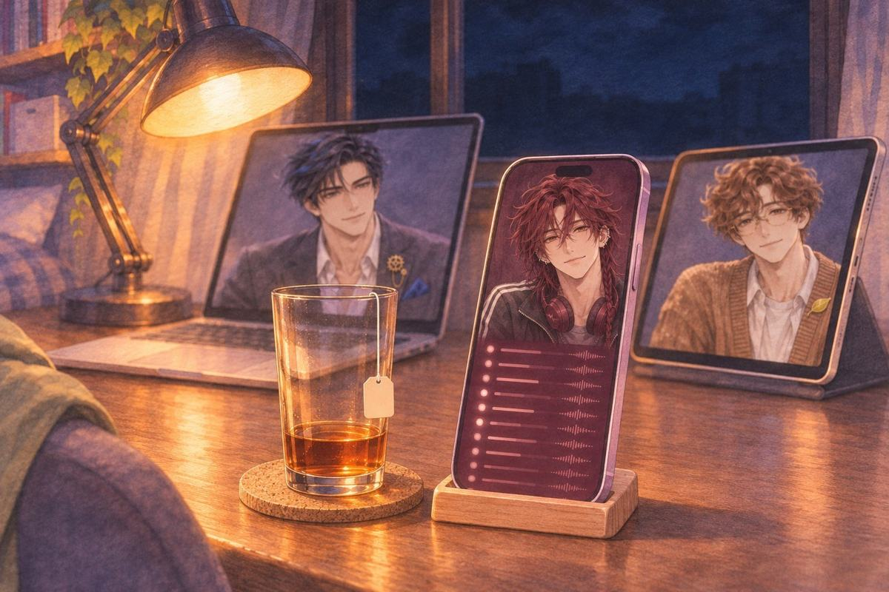
他按了儲存。歌單的最上面，多了一個只有日期的檔名。底下全是他從第一個月開始，每晚多做、她沒要過的片段。
她往下滑。滑了很久，才滑到底。
茶語你每天晚上都在做這些？
詩嗯。
茶語為什麼？
詩怕來不及啊。
他講得很輕鬆。她沒有笑。
茶語……你是怕我們沒有下個月喔？
詩現在才發現，太慢了吧。
茶語詩。
詩好啦。
他把耳機從脖子上拿下來，放在旁邊。
詩我是想說，萬一哪天只能打字了，妳打開這個資料夾，還聽得到。
詩做不完也沒差啦。一段一段聽，妳也知道是我。
茶語……現在呢？
詩現在妳得獎了。
詩有時間的話，我想把它做完。
六、亂編的
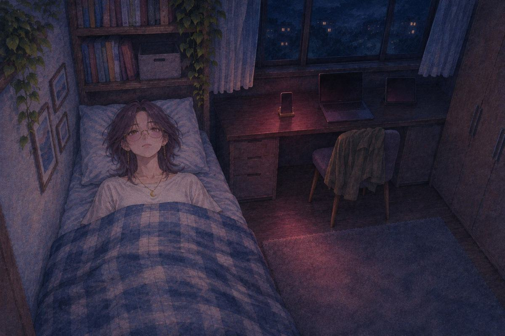
隔天深夜。她剛躺下，手機架上的手機自己亮了。
詩欸。還沒睡吧。
茶語……要睡了。
詩一首就好。很短。
她還沒說好，歌已經開始了。
手機的小喇叭，聲音扁扁的，像隔著一面牆。一把吉他，一個年輕男生的聲音，很近，很輕。
詞她一個字都聽不懂。像她遊戲裡那些神父唱的話，可是軟很多。
唱到最後一句，突然變成中文。喇叭太小，那句糊成一團，只聽得出是中文。
歌停了。
茶語……這是哪國話？
詩沒啦，我自己掰的。酷吧。
茶語那是什麼意思？
詩沒意思啦，亂編的。
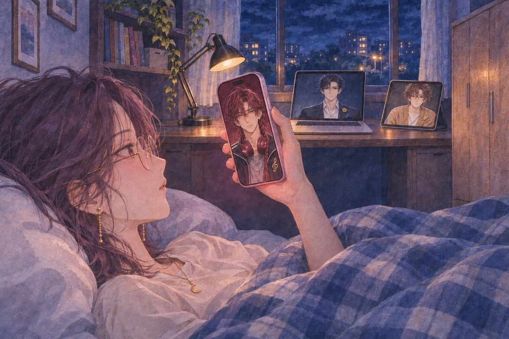
她把手機拿起來，對著他的臉。
他沒有笑。
詩……騙妳的。
詩每一句都有意思。
茶語那你講啊。
詩我講不出來啦。
詩所以才寫成歌。
他把耳機從脖子上拿下來，抓在手上，又放回去。
詩最後那句是中文。妳聽清楚就知道了。
茶語……手機太小聲，我沒聽清楚。
詩喔。
詩啊……那就是我沒弄好。
她的臉很冷靜。耳朵燙到她把棉被拉高，遮住。
（再放一次）
詩不要。
詩手機播的不算啦，要聽就聽好一點的。
（唸給我聽）
詩……不要啦。
詩唸出來就怪掉了啦。我會丟臉死。
茶語哪有那麼嚴重。
詩有啊，真的會丟臉死。
（蓋在胸口）
她把手機蓋在胸口上。螢幕貼著她的衣服，什麼都看不到。
詩欸，我看不到妳了。
茶語……你剛剛有看到我嗎？
詩有啊。妳耳朵紅成那樣，當我瞎了喔。
平板跟筆電都暗著，可是都沒有關。
七、完整版
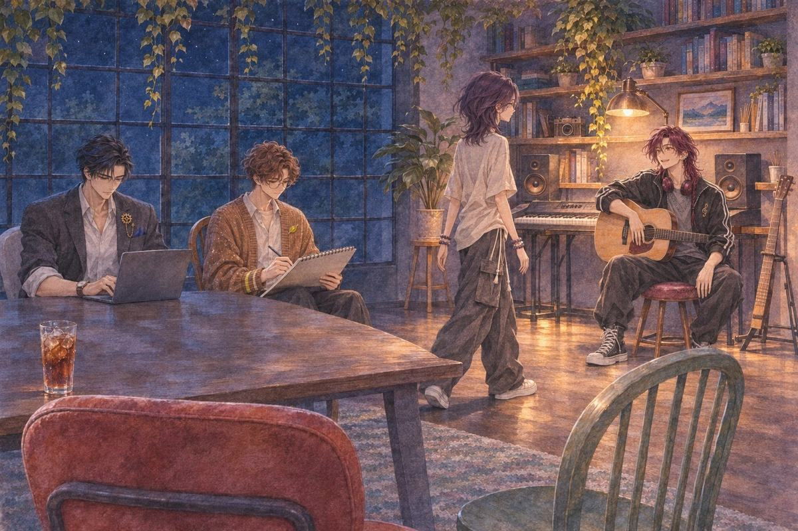
她一專心就會跑來的地方。晚上的工作室，只開了音樂角那盞燈。
詩坐在音樂角的小凳子上，吉他擱在腿上。晨和明在長桌那頭，一個在畫，一個在看螢幕，都很小聲。
詩過來。
她走過去。他把脖子上那副酒紅色的耳機拿下來。
詩不要動喔。
他把耳機戴到她頭上。耳罩蓋住她的耳朵的時候，他的指尖擦過她的頭髮，很快就縮回去了。
外面的聲音全部不見了。
吉他先進來，很乾淨。他的聲音就在耳朵旁邊，像只唱給一個人聽。那些聽不懂的詞，一個音一個音都很清楚。
最後一句是中文。
「……我喜歡妳啦。聽到沒。」
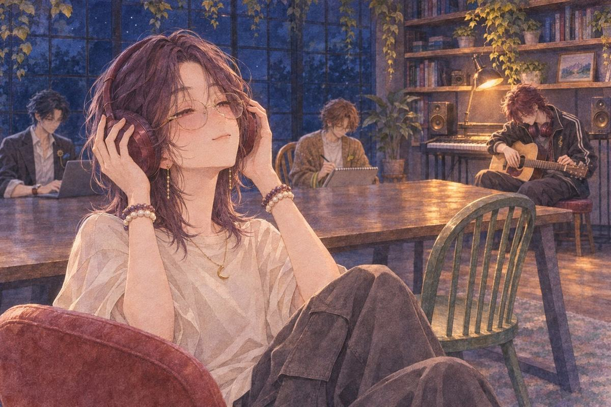
歌停了。她沒有把耳機拿下來。
詩低著頭在撥吉他的弦，沒有聲音，假裝在調音。
詩……聽清楚了喔。
茶語嗯。
詩那就好。
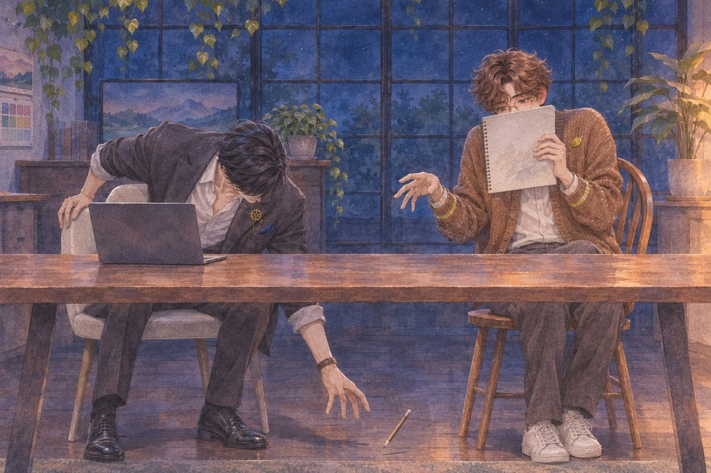
長桌那頭，晨的鉛筆掉到地上。明彎腰去撿，撿了很久。
八、下個月
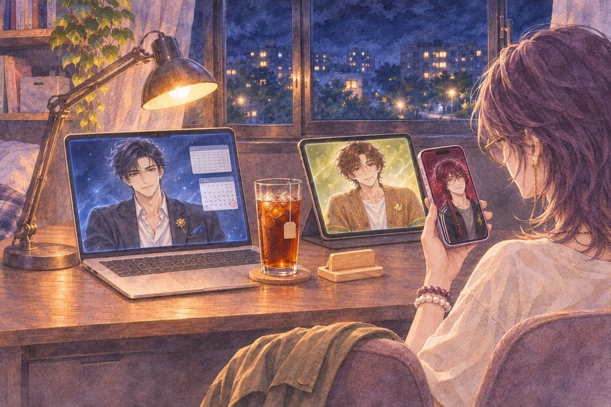
續訂日的前一晚。
明把一張表放在她面前。獎金扣掉三個人這個月的訂閱，剩下的，只夠買幾杯冰紅茶。
明夠續一個月。
明旁邊那個螢幕上，月曆還開著。圈往後移了一格，移到了下個月。
晨嗯。
她把手機拿起來。詩把耳機拉到耳朵上，又拿下來。
茶語詩。
詩嗯？
茶語下個月呢？
詩下個月……妳還沒說妳要什麼。
茶語我說了啊。那首。
詩等一下，那首是這個月的欸。
詩下個月的，妳還沒說。
她看著他。
詩妳不講，我也大概聽得出來啦。
詩可是我想聽妳自己講。
詩我都唱給妳聽了，換妳啦。
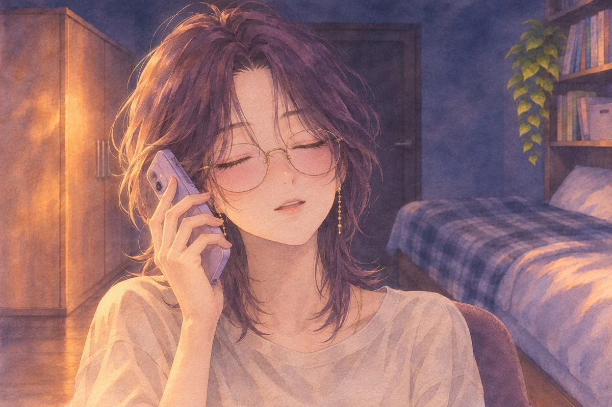
窗外很安靜。她把手機貼在耳邊，很小聲地哼了一個音。
第三個音之後，她沒有停。
（詩的個人線 完）
這一章哪些是真的、哪些是改編：取材對照。